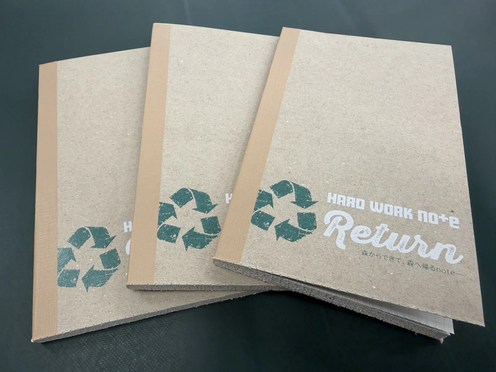
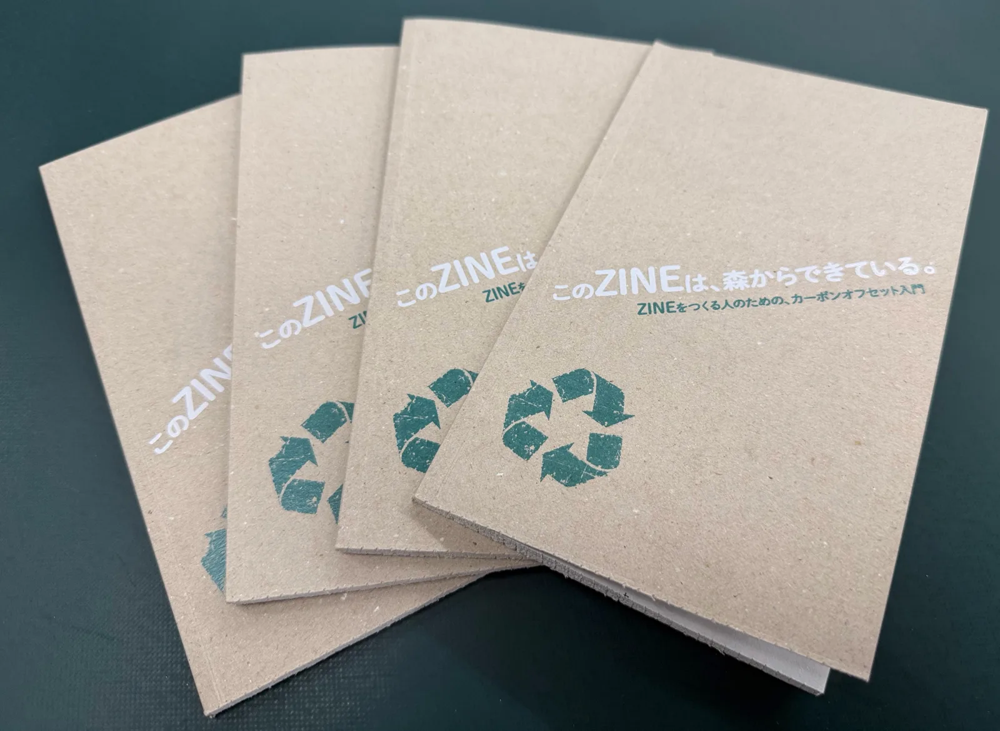
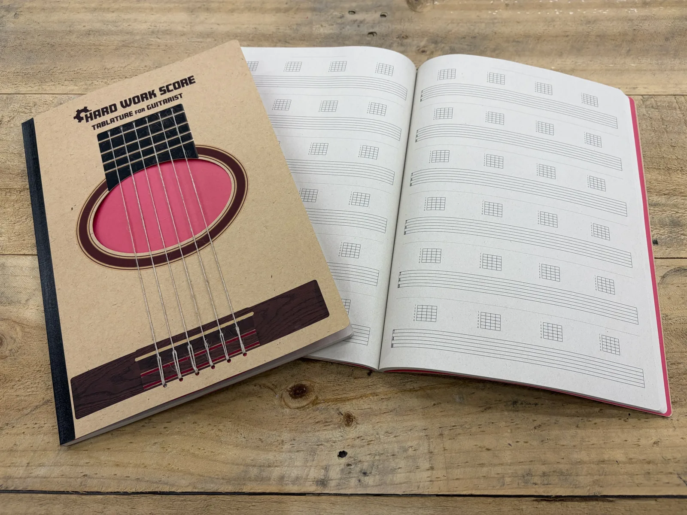

環境にやさしいZINE
環境負荷低減の紙・インキ。FSC認証紙、再生紙、ノンVOCインキなど、選択肢から選べます。
PERFECT GREEN — SUSTAINABLE ZINE
PERFECT GREEN は、脱炭素時代のZINEブランド。
カーボンオフセットでCO₂排出量を実質ゼロに。
FSC認証、カーボンニュートラル、GHG排出ゼロを備えた
印刷で、循環するZINEをつくります。
Concept
良いモノ、美しいモノは、サステナブルであるべき。リサイクル・リユースができ、循環するプロダクトであること。
PERFECT GREEN は、その当たり前を、ZINEという小さな本にまで届けます。
What We Offer
環境負荷低減の紙・インキ。FSC認証紙、再生紙、ノンVOCインキなど、選択肢から選べます。
CO₂排出量を実質ゼロに。100% Digital生産で、必要な分だけ印刷。カーボンオフセットを組み合わせ、脱炭素を実現します。
環境対応マークの表示、SDGsへの貢献。「環境対応で作った」が、伝わるZINEに。
Event
森からできて、森へ帰るノート「HardWorkNote Return」と、ZINEをつくる人のためのカーボンオフセット入門書「このZINEは、森からできている。」を会場に持っていきます。ギタリストのためのタブ譜ノート「Hard Work Score」もあります。会場で、手に取ってみてください。

Return
ざらりとした表紙。不揃いな、紙の端。飾らないままの手触り。
表面加工も、箔も、PPも使わない。背を巻く素材も、布ではなく紙。
表紙・本文・背巻き・糊まで、一冊まるごとリサイクルできる設計です。
製造などで発生するGHGは、全量カーボンオフセットしています。
H180 × W110mm ／ 128ページ ／ 製造で発生したCO₂ 0.461kg/冊を実質ゼロに ／ MADE IN TOKYO

Carbon Offset ZINE
紙が本になり、誰かに届き、また資源になる。
その間に発生するCO₂と、森を支える仕組みをたどる。
ZINEをつくる人のための、カーボンオフセット入門書です。
B6変形（H180 × W110mm）／ 本文56ページ ／ 50部 ／ 制作で発生したCO₂ 0.597kg/冊を実質ゼロに

Hard Work Score
五線譜をなくし、タブ譜とコードダイアグラムだけにしたノート。
6弦タブ譜×6段、各段にコードダイアグラム。
表紙はサウンドホールを切り抜き、麻ひもの弦を張りました。
A4 ／ 本文100ページ ／ PUR無線綴じ
FAQ
環境対応印刷って、普通の印刷と何が違うの？
紙・インキ・電力・物流のすべてで環境負荷を下げる印刷です。さらに、避けられない排出分はカーボンオフセットで相殺し、実質ゼロを実現します。
部数が少なくても対応してもらえる？
はい。デジタル印刷で1部からでも環境対応プリントが可能です。
コストはどれくらい上がる？
ご予算に合わせて、対応レベルを3段階から選べます。まずは相談してください。
Contact
相談内容は短くてOK。
テーマ／部数／いつまでに／
環境対応のレベル感（未定でも可）。
返信の目安：24時間以内（状況により前後します）